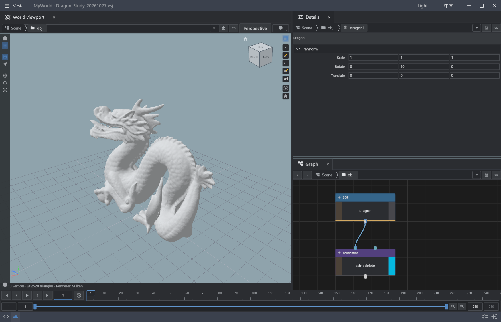

A WORLD OF YOUR MAKING.
Worlds,
by you.
An Agent-centered world creation tool.
From a first idea to a world you can keep shaping.
01 / THE RIFT VALLEY
Between mountains,
a world finds its story.
01THE VISION
Turn places you imagine
into worlds you can shape.
Terrain is the beginning. Roads connect settlements, buildings respond to place, and ecosystems follow water and climate. Vesta's vision is for Agents and procedural tools to understand, shape and refine these relationships together.
Make room for life.
Terrain, roads, blocks and buildings
Vision concept · domain tools are being developedLet nature connect.
Waterways, biomes and ecosystems
Vision concept · complete ecosystem creation is not yet implementedFrom landforms to environments. From individual assets to connected worlds.
TERRAIN → ENVIRONMENTS → WORLDS
02REAL OUTPUT. REAL POSSIBILITIES.
Give a patch of terrain
a character of its own.
These films visualize existing Vesta heightfield results.
From continuous ridges to layered rock terraces,
each form comes from a reusable procedural process.
VESTA / RESULT STUDY 001
SHAPE / TERRAIN
One starting point. Different expressions.
Ridge → Terraces
Actual samples · presentation render
Shape a continuous mountain ridge.
Carve a rhythm of layered rock.
Based on actual 512² Vesta CLI output. Only the presentation camera is animated.
About these films
These films visualize precomputed heightfields. They are not recordings of real-time generation, erosion over time, or the Builder interface. Both result sets share the same display relief; original heights are unchanged. Sample provenance ↗
03FROM ASSET TO ENGINE
Take the process
into Unreal.
A Vesta Digital Asset carries its procedural definition and published parameters into Unreal Engine. Import a VDA, work with its parameters, and evaluate the terrain through the Vesta plugin inside the engine.
Adjust its published controls.
See the terrain in Unreal.
Current verified slice: VDA import, parameter overrides and Heightfield evaluation. Selected terrain operations use UE RHI GPU. This is not a claim that all data types, GPU operations or production delivery workflows are complete.
04AN AGENT AT THE HEART OF CREATION
You bring the imagination.
Let an Agent help you create.
Vesta is building an Agent-centered World Builder: plan around your intent, call tools, observe results, and refine together. Professional editing capabilities will come together in the same creative environment, with manual control always available.
Describe a place worth making.
Turn atmosphere, environments and constraints into a clear creative direction.
Connect intent to tools.
An Agent uses controlled tools to work with the computation and asset capabilities implemented today.
Look closer. Keep shaping.
Adjust parameters, inspect the process and refine a part of the world without losing the whole.
ONE CREATIVE ENVIRONMENT
World BuilderCreate with tools, refine with an Agent
Builder brings together the world preview, node graph and parameter editing. Developer Agent is available inside Builder and in its own desktop app; it manages conversations, models and history. External Agents can connect to the running Builder through controlled tools.
Creative intentWorld previewProcedural toolsManual editing
AGENTAt the heart of creation
Node editing, parameters and result display are already taking shape in Builder. The remaining Studio capabilities are moving across in stages; the full migration and creation workflow are still in development.
Imagine freely.
Stay in control of the process.
Agents move the work forward. Procedural structure keeps it editable.
Inspect, change, undo, and keep what works
for the next scene and the next idea.

Actual native editor capture, with the full Dragon mesh and an attribute-processing display step. Authoring migration into Builder remains in progress.
05A WORLD IN PROGRESS
An ambitious vision.
Built on tangible progress.
Vesta is in technical-preview development.
We are refining terrain and the authoring foundation first,
then growing the scale and complexity of world creation.
A tangible beginning.
- Graph / VDA and CLI execution
- Builder node graph, parameters and result display
- CPU / GPU implementations for selected terrain operations
- Unreal Heightfield execution
- Live Scene editing through controlled Agent tools
- Developer Agent in Builder and on the desktop
A connected creative experience.
- Complete Studio-to-Builder authoring migration
- Asset tools, contextual help and editing consistency
- Agent-led creation, result review and repair
- Broader external Agent workflows
Worlds that work together.
- Terrain, roads, buildings and ecosystems
- Goal-driven planning, evaluation and repair
- Reusable assets and continuous world iteration
- Later expansion into characters and animation
- More complete engine delivery workflows
Status reviewed October 27, 2026. Each study retains its original evidence date and scope. Verified slices do not imply a complete product or qualified production delivery.
From a first idea to a world of your own.